25 面部下三分之一：下颌角和下颌缘
面部下三分之一 下颌角和下颌缘
JANI VAN LOGHEM, SHINO BAY AGUILERA, AND LUIS SORO
25.1 引言
清晰的下颌缘是青春的标志，在西方文化中被认为是女性的美丽特征。对于西方国家的男性而言，强健的下颌轮廓被认为具有吸引力（章节 22 和 23 中也有讨论）。在亚洲文化中，下颌缘的清晰度通常不被视为美学特征，因此文化差异将影响医生应采取的方向以达到理想的治疗效果。独立于性别和文化，衰老过程会导致面部松弛（jowling）。当患者出现面部松弛时，首选的处理顺序是先提升中面部，然后再处理下部面部，因为治疗中面部会影响到下部面部的松弛区域（以及鼻唇沟和泪沟）。
25.2 年龄相关的解剖学变化
从下颌角和下颌缘到颏部，面部下三分之一的解剖结构变化是密切相关的。因此，关于年龄相关解剖学变化的进一步讨论可参见第 23 章。
25.3 解剖学危险点
面神经和外颈动脉在这片区域深层走行。面动脉走行于骨膜上，位于咬肌前侧。在下颌支背侧，外颈动脉深入到下颌骨内。
腮腺位于浅筋膜下（sub-SMAS），并覆盖在咬肌上。应避免将羟基磷灰石钙（CaHA）注射到该唾液腺内，因为这可能通过阻塞唾液导管导致唾液淤积和积累，从而可能形成结石和腮腺炎（图 25.1）。
应避免直接向松弛的脂肪区进行注射，因为这可能导致美学上不理想的加重松弛。
25.4 下颌缘矫正
有关注射点位，参见图 25.2。
25.4.1 分步技术
- 识别并勾勒出下颌缘区域，其形状类似于“U”形。
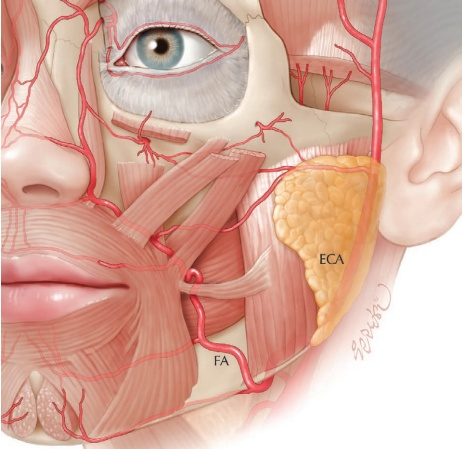
-
在预松弛沟和下颌角处标记推荐的注射点。预松弛沟位于“U”形畸形的前方，或者通过从外口角缘垂直向下延伸的线确定（图 25.3）。
-
使用 0.1–0.2 mL 的团注，以骨膜上方式重建下颌缘轮廓（图 25.4）。
-
利用钝性套管针进行逆行线性牵引技术，注射于真皮-皮下交界处（图 25.5）。
-
对于松弛严重的患者，在颧骨下方创建注射点，并朝向“U”形畸形方向。
-
使用钝头套管针进行逆行扇形技术，进一步增强下颌缘并提升面部下垂区域。
25.5 定义下颌缘的套管针技术¹
有关注射点位，参见图 25.6。
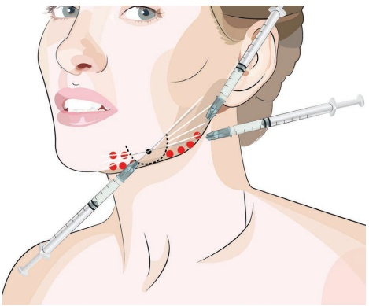
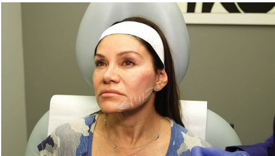
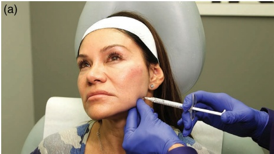
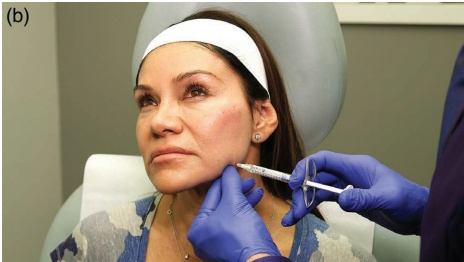
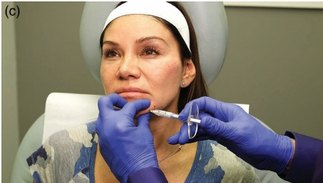
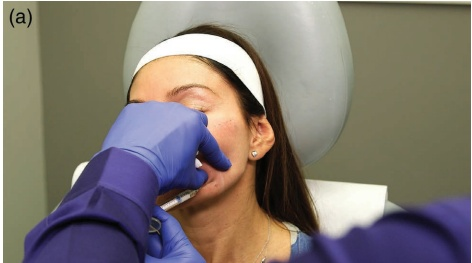
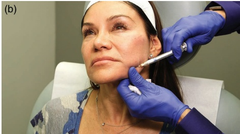
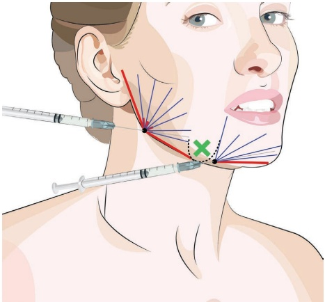
25.5.1 分步技术
-
描记法令纹，确定下颌角的位置并消毒。
-
在或略位于下颌角外侧上部以及法令沟处确定进针点。
-
考虑局部麻醉，并使用 23G 锐针预刺孔。
-
使用未稀释的 CaHA 和 25G、38 mm 的钝性套管针进行轮廓塑形，使用稀释的 CaHA 进行皮肤质量改善，并淡化未稀释 CaHA 的效果。
-
用非惯用手垂直向上提拉下颊部。
-
将钝性套管针从下颌角进针点推进至耳前区域，皮下放置约 0.2–0.3 mL 的厚逆行线性丝（图 25.7）。
-
使用相同未稀释的 CaHA，在角度处做小扇形注射，朝向下颌骨下缘。
-
在下颌骨下缘，将钝性套管针推进至法令沟后方。
-
在下颌边缘注射约 0.3 mL 的逆行线性丝。用非惯用手捏起皮肤，可以引导逆行注射并以一条清晰的线条注入产品（图 25.8）。
-
从法令沟进针点，将钝性套管针沿下颌边缘推进至颏部正中线。
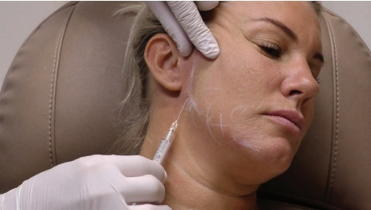
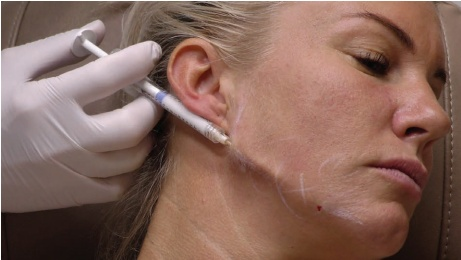
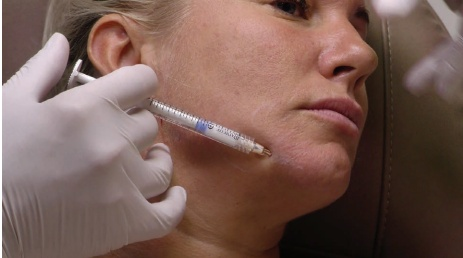
-
注射约 0.2 mL 的逆行丝（图 25.9）。
-
接下来切换至稀释的 CaHA（根据皮肤厚度不同，通常每 1.5 mL CaHA 使用 0.5 至 1.5 mL 利多卡因）和 25G、50 mm 的钝性套管针。
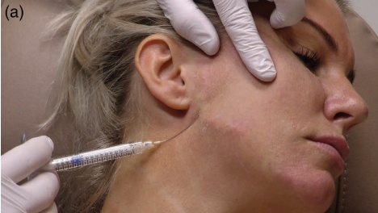
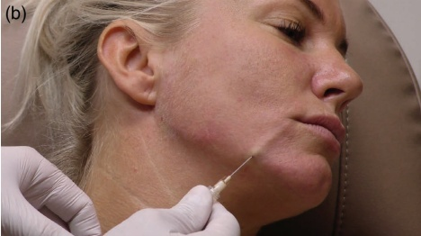
-
在初始修饰 CaHA 注射之间，采用扇形技术注射逆行线性丝（图 25.10）。
-
从面颊沟入点，从拟人偶线向下至下颌缘，以扇形模式注射逆行线性丝。
-
如有需要可进行按摩均匀化。
25.6 下颌轮廓钝性套管针技术 2
有关注射定位，参见图 25.11。
25.6.1 分步技术
-
标记面颊沟并消毒。
-
确定颏部和面颊沟的入点。
-
考虑局部麻醉，并用 23G 针头预刺孔。
-
使用未稀释的 CaHA 和 25G、38 mm 的钝性套管针。
-
将钝性套管针从颏部推进至面颊沟，皮下放置一根厚实的逆行线性丝，约 0.2–0.3 mL（图 25.12）。
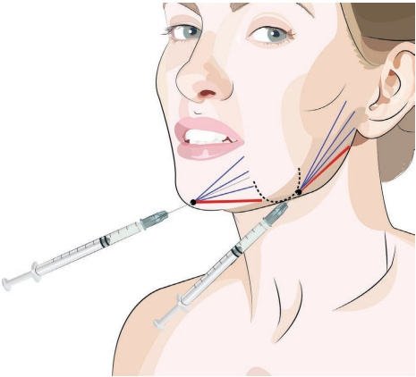
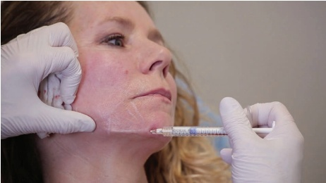
-
从面颊沟入点，将钝性套管针推进至耳乳突，皮下放置另一根厚实的逆行线性丝，约 0.2–0.3 mL（图 25.13）。
-
切换到稀释的 CaHA（根据皮肤厚度不同，但通常是每 1.5 mL 的 CaHA 对应约 0.5–0.8 mL 的利多卡因）和 25G、50 mm 的钝性套管针。
-
在第一组线汇上游注射逆行线性丝，采用扇形技术（图 25.14）。
-
如有需要可进行按摩均匀化。
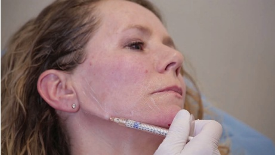
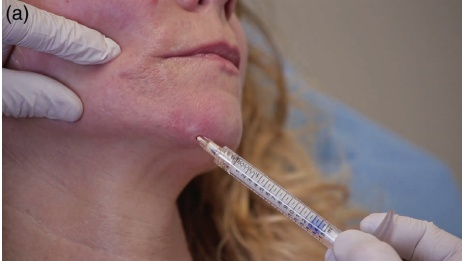
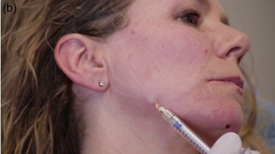
25.7 下颌角锐针骨膜团注技术
25.7.1 分步技术
-
标记下颌角并消毒。
-
考虑从皮肤到骨膜的局部麻醉。
-
使用未稀释的 CaHA 和产品配套的 27G 锐针。
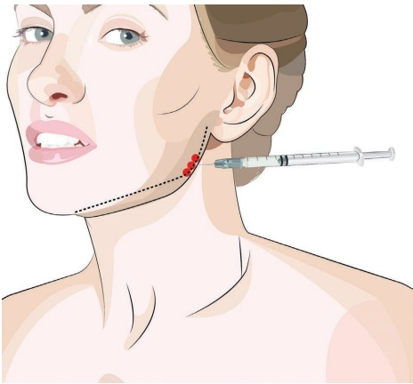
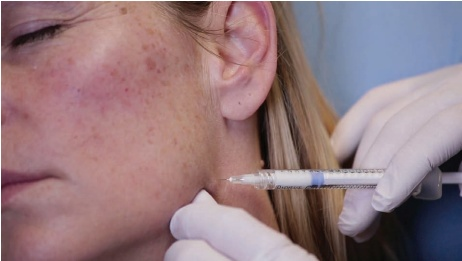
-
将针从下颌角的背侧推进至骨膜（图 25.16）。
-
置入一个骨膜团注。
-
部分回撤、重新定位并再次推进针，并在下颌角周围注射额外的团注。
-
由于产品可能会通过针形成的通道回流，可能需要按摩以将产品塑造成所需的形状。
有关最终结果和应用技术的可视化，请参阅图 25.17。
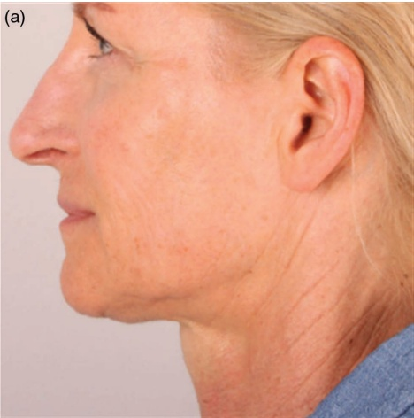
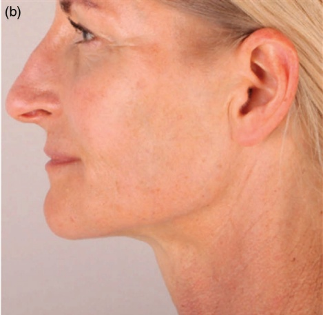
25.8 术后护理
如有必要，可手动按摩该区域以使产品均匀分布。如果在下颌角骨膜上注射，部分产品可能会进入肌肉层，尤其是在使用锐针注射时。这可能导致咀嚼时疼痛或敏感。这是一个暂时性的问题，大约三天内应自行消退。在下颌角或下颌缘可触及的皮下沉积物对一些患者来说可能会令人不适。应在治疗前告知患者这种可能性。通常情况下，随着产品凝胶部分在大约一个月后部分吸收，这个问题就会减轻。
25.9 实现最佳效果的附加治疗
在处理下颌缘之前，可以考虑进行颊部丰容，因为向颊部深层注射 CaHA 或其他填充剂通常会使法令纹加重（或导致下垂）。任何其他中面部提升术也可能对下颌缘有益。除了提升颊部外，丰容颏部、前颈部沟和口角线可以显著改善下颌轮廓并减轻下垂。
有关男性丰容和额外的下颌治疗，请参阅第 20 章、第 23 章和第 26 章。